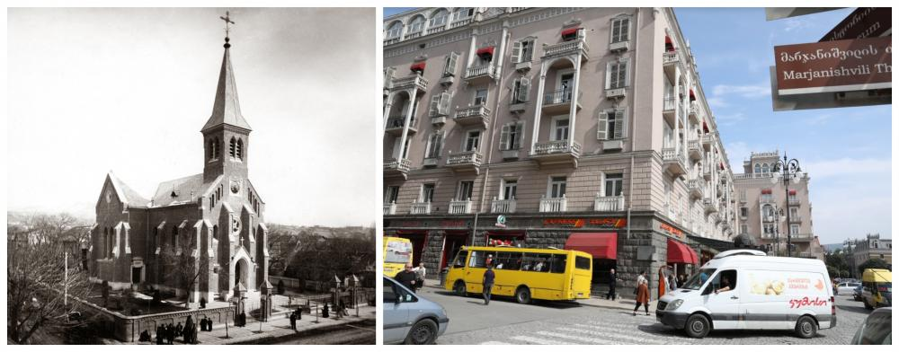
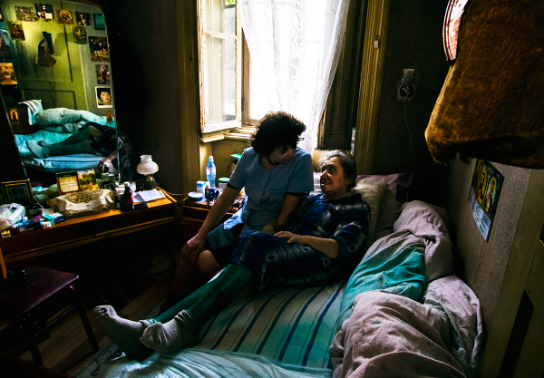

ევანგელურ-ლუთერული ეკლესიის კვალდაკვალ
ავტორი: ლევან სუთიძე
„იყო დრო, როცა ფიქრობდნენ, რომ იქ, სადაც ერთსა და იმავე სახელმწიფოს ერნი სხვადასხვა წესით ადიდებენ ღმერთსა, ერთობა სახელმწიფოსი ვერ იხეირებს და დაირღვევაო. რეფორმაციამ დაამტკიცა, რომ ეგ აზრი მარტო უმეცრების ნაყოფია; დაამტკიცა, რომ ერთსა და იმავე სახელმწიფოში ძალიან კარგად მოთავსდება სხვადასხვაობა სარწმუნოებისა და ერთობის კავშირის საძირკვლიდამ ერთს ქვასაც ვერ გამოაცლის“
ილია ჭავჭავაძე
საქართველოში ჩამოსვლა
ევანგელურ-ლუთერული ეკლესია საქართველოში 200 წლის იუბილეს აღნიშნავს. ეს თარიღი რეფორმაციის 500 წლისთავსაც ემთხვევა. მარტინ ლუთერის თეოლოგიურმა რევოლუციამ ბიძგი მისცა პოლიტიკურ, ეკონომიკურ და კულტურულ ძვრებს და მნიშვნელოვნად განსაზღვრა დასავლური ცივილიზაციის სახე და შინაარსი. ვიტენბერგის უნივერსიტეტის კარზე 95 თეზისის მიჭედებით დაწყებულმა რეფორმაციამ, შრომის სპეციფიკურ, პროტესტანტულ ეთიკას დაუდო საფუძველი.
სწორედ გამორჩეული შრომისმოყვარეობის დამსახურებით აღმოჩნდნენ ლუთერანები საქართველოში. ცარისტული ხელისუფლება დაინტერესებული იყო იმპერიის პროვინციებში გერმანელების ჩასახლებით - მიიჩნეოდა, რომ ისინი არაერთი ეკონომიკური დარგის განვითარებასა და სრულყოფას შეუწყობდნენ ხელს და ადგილობრივებს ახალ ცოდნას გადასცემდნენ. იმპერია მათ მიწებს უთმობდა, გადასახადებისგან ათავისუფლებდა და აღმსარებლობის თავისუფლებას ჰპირდებოდა.
შვაბები საქართველოში 1817-1818 წლებში ჩამოვიდნენ. მათი დიდი ნაწილი ოფიციალურ ლუთერულ ეკლესიას თავს არ მიაკუთვნებდა და სეპარატისტად იწოდებოდა, ისტორიულ სამშობლოში რელიგიური ნიშნით იდევნებოდა და განიცდიდა ეკონომიკურ პრობლემებს. გადმოსახლებულ გერმანელებს რუსეთის იმპერიაში „კოლონისტებს“ უწოდებდნენ.
გზა საქართველომდე ადვილი არ ყოფილა - შვაბების ნაწილმა საქართველომდე ვერ ჩამოაღწია. ავადმყოფობამ მათი ნაწილი იმსხვერპლა. ბადენ-ვიუტემბერგიდან ჩამოსულმა რამდენიმე ასეულმა ოჯახმა თბილისთან ახლოს დასახლებები შექმნეს. 1819 წლისთვის სამხრეთ კავკასიაში უკვე არსებობდა გერმანელთა 8 კოლონია[1]. მოგვიანებით მათი რაოდენობა გაიზარდა.
დღეისთვის საქართველოში გამოვლენილია 23 გერმანული დასახლება და იქ არსებული 1200-ზე მეტი შენობა-ნაგებობა, აგრეთვე ალექსანდერ ფონ კუჩენბახის ინდუსტრიული მემკვიდრეობა და გერმანელთა 15 საცხოვრებელი სახლი ქალაქ დმანისში. 37 ობიექტი კულტურული მემკვიდრეობის ძეგლის სტატუსს ატარებს.
გერმანელებმა გამორჩეული შრომისმოყვარეობა გამოიჩინეს, რაზეც ილია ჭავჭავაძე წერდა: „ჩვენ ჩვენს ქვეყანაში ღარიბნი ვართ და გუშინდელი მოსული გერმანელი კი იმდენად მდიდარია, რომ შვილების გაზრდის ხარჯსაც ჰშოულობს და სახლობასაც გაუჭირებლივ ჰკვებავს“., ილია ამას შემდეგნაირად ხსნიდა - „იმიტომ, რომ გერმანელს და სხვას მისებრ მიხვედრილს კაცს ცოდნა და სწავლა-განათლება სამკაულად კი არა აქვს მიჩნეული, როგორც ბუზმენტი ჩოხისათვის, ან ძეწკვი გულ-მკერდისათვის. იგი ცოდნასა და განათლებას უყურებს, როგორც აუცილებელს საჭიროებას, როგორც არსებითს პურსა, და ამიტომაც, როცა სარჩო-საბადებელისათვის იღვწის, მაშინ წელებზედაც ფეხს იდგამს, რომ შვილის გასაზრდელი ხარჯიც მოიამაგოს“.
თბილისი, მტკვრის მარცხენა სანაპირო, გერმანელების დასახლება
რელიგიური ცხოვრება
ჩამოსახლებული გერმანელების გაერთიანებასა და ოფიციალურ ლუთერულ ეკლესიაში ინტეგრაციას დრო დასჭირდა. მათი რელიგიური შემადგენლობა ჭრელი იყო. გერმანელები თავად ირჩევდნენ რელიგიურ მასწავლებლებს, ატარებდნენ შეკრებებსა და მსახურებებს, ასწავლიდნენ კატეხიზმოს, თუმცა კოლონიები ერთმანეთისგან ღვთისმსახურებისა და რწმენა-წარმოდგენების თვალსაზრისით, გათიშულები რჩებოდნენ.
1824 წელს თბილისში ჩამოვიდნენ ლუთერული რწმენის მისიონერები, ხოლო 1827 წელს ბაზელელი იოჰან ბერნჰარდ ზალტეტი დაინიშნა მთავარ პასტორად. ბაზელის მისია ევროპელ ახალგაზრდებს სამისიონეროდ აგზავნიდა. ადგილზე ჩამოსულმა მქადაგებლებმა კოლონისტები მოხიბლეს. მათვე მოიწვიეს პირველი სინოდი და შეადგინეს კოლონიების წესდება, რომელიც მკაცრად განსაზღვრავდა გერმანელების ცხოვრების წესს და დიდ ყურადღებას უთმობდა როგორც ლოცვას, ისე შრომას. ზალტეტის რელიგიური მოღვაწეობის შედეგად, შვაბები ევანგელურ-ლუთერულ ეკლესიაში გაერთიანდნენ. 1834 წელს ნოი-ტიფლისის დასახლებაში პირველი ეკლესიაც აშენდა. სწორედ “კირხედან” (ეკლესია) - ამ სიტყვიდან მოდის მარჯანიშვილის ქუჩის ძველი სახელწოდება “კიროჩნაია”.
ილუსტრაცია მოგვაწოდა ნესტან თათარაშვილმა
სამეწარმეო, საგანმანათლებლო და კულტურული საქმიანობა
გერმანელები არა მხოლოდ ეუფლებოდნენ ადგილობრივ ენებს, გამოწერილი ჰქონდათ ჟურნალ-გაზეთები, რაც მათი ინტერესების მრავალფეროვნებაზე, განსაკუთრებით კი ადგილობრივი ყოფის მიმართ მათ დაინტერესებაზე მეტყველებს.
ისინი გამოირჩეოდნენ წერა-კითხვის ყველაზე მაღალი მაჩვენებლით - 1926 წელს კავკასიაში 25 000-ზე მეტი გერმანელი ცხოვრობდა, მათ ორ მესამედს წერა-კითხვა შეეძლო.
ლუთერანები გამორჩეულ ყურადღებას უთმობდნენ ბავშვების სწავლა-განათლებას. თბილისში 1850 წლიდან მეოცე საუკუნის ორმოციან წლებამდე არსებობდა პეტრე-პავლეს სახელობის ათწლიანი სასწავლებელი, სადაც განათლებას გერმანულ ენაზე იღებდნენ.
1886 წელს ლუთერანებმა დააარსეს „ქალთა ევანგელურ-ლუთერული საქველმოქმედო საზოგადოება“, რომელიც მიზნად ისახავდა კოლონიების ხელმოკლე წევრთა დახმარებას. მიუხედავად იმისა, რომ თავდაპირველად ლუთერანების დასახმარებლად შეიქმნა, რამდენიმე წელში თავშესაფრით სარგებლობდნენ როგორც ქართველი მართლმადიდებლები, ისე კათოლიკეები.
გერმანელებმა დიდ წარმატებებს მიაღწიეს მევენახეობის, მიწათმოქმედებისა და მეცხოველეობის საქმეში. შრომის კულტურა ეტყობოდა მათ სახლებსა და ეზო-კარს. გერმანული დასახლებების ცენტრში ეკლესია იდგა, იყო სკოლა, აფთიაქი, სასტუმრო, დუქანი და ბევრი მაღაზია.
გერმანელებმა საქართველოში გახსნეს პირველი ლუდსახარში საწარმო, სადაც ბავარიული ლუდი მზადდებოდა.
ძმები სიმენსების კომპანიამ 1850-60-იან წლებში გაიყვანა ადგილობრივი და საერთაშორისო სატელეგრაფო ხაზები.
თბილისში პირველი მესაათეებიც გერმანელები იყვნენ. თბილისის საკრებულოს შენობის საათი იულიუს ჰიონემ დადგა.
მეცხრამეტე საუკუნის განმავლობაში სააფთიაქო ბიზნესში გერმანელ ფარმაცევტებს ჰქონდათ მონოპოლია. 1828 წელს ფლორ შიონბერგმა პირველი სამოქალაქო აფთიაქი გახსნა. შენობა დღემდე დგას თბილისში, ლეონიძის ქუჩაზე.
შვეიცარიის მოქალაქე, ბარონ ალექსანდერ ფონ კუჩენბახმა თბილისსა და დმანისთან ახლოს შვეიცარული ყველის ქარხნები გახსნა. 1913 წლისთვის ბორჩალოს მაზრაში 37 შვეიცარული ყველის საწარმო მუშაობდა.
გერმანელები ეწეოდნენ მეხილეობას, მეფუტკრეობას და მებოსტნეობას; განსაკუთრებით განვითარებული იყო კარტოფილის მოყვანა; მისდევდნენ მესაქონლეობასაც, ჰყიდდნენ რძესა და კარაქს.
ისტორიული წყაროებით დასტურდება, რომ შვაბებს და ქართველებს კარგი ურთიერთობა ჰქონდათ. შვაბებმა ქართული რუსულზე ადრე ისწავლეს. მე-19 საუკუნის ბოლოს კატარინენფელდის დასახლებაში ქართველებმა მართლმადიდებლური ტაძრის მშენებლობა გადაწყვიტეს. გერმანელები დახმარებას დაპირდნენ.გერმანელებს დიდი წვლილი აქვთ შეტანილი არქიტექტურის, ხელოვნებისა და კულტურის განვითარებაშიც.
თბილისის ოპერისა და ბალეტის თეატრი, ქაშუეთის ტაძარი, ლიკანის სასახლე, კლასიკური გიმნაზიის შენობა, დღევანდელი თბილისის საკრებულო, მეფისნაცვლის სასახლე, რუსთაველის თეატრი და სხვა შენობები გერმანელი არქიტექტორების შემოქმედებაა.
არქიტექტორმა ჰაინრიხ შარერმა დააგეგმარა და გააშენა თბილისის ბოტანიკური და 9 აპრილის ბაღები, აგრეთვე ბორჯომის პარკი.
გეოგრაფი და ეთნოლოგი გუსტავ რადე ითვლება საქართველოს ეროვნული მუზეუმის ერთ-ერთ ფუძემდებლად.
შმერლინგმა დაარსა თბილისის სამხატვრო სასწავლებელი. იგი ქართული კარიკატურული მხატვრობის ერთ-ერთი პირველი წარმომადგენელია.
კურტ ფონ კუჩენბახმა 1906 წელს დააარსა გაზეთი “კაუკაზიშე პოსტ”.
გერმანელები პოპულარიზაციას უწევდნენ ქართულ კულტურას საზღვარგარეთაც. მაგალითად, მწერალმა არტურ ლაისტმა გერმანულ ენაზე თარგმნა „ვეფხისტყაოსანი”. მხატვარმა მაქს ტილკემ შემოიარა საქართველოს ყველა კუთხე და შექმნა ქართული ეთნოგრაფიული სამოსების ამსახველი 83 ნამუშევარი.


მაქს ტილკე. დაცულია საქართველოს ეროვნული მუზეუმის კოლექციებში
რეპრესიები
გერმანელების დევნა ჯერ კიდევ პირველი მსოფლიო ომის დროს დაიწყო: კოლონიებს სახელებს უცვლიდნენ; 1915 წელს სათვისტომოს მეთვალყურეობდნენ მთავრობის მიერ მიჩენილი ე.წ „სრაჟნიკები“. გერმანული წარმოშობის მოქალაქეებისთვის მიწათმფლობელობა ჯერ შეიზღუდა, შემდეგ მისი სრული ლიკვიდაცია დაიწყო. მათ იძულებით აყიდინებდნენ უძრავ ქონებას.
1918 წლისთვის გერმანელებმა შვება იგრძნეს. ისინი მიესალმნენ საქართველოს დამოუკიდებლობის გამოცხადებას, აღნიშნეს საქართველოში ჩამოსვლისა და ლუთერული საკრებულოს დაარსების 100 წლისთავი.
საბჭოთა ოკუპაციის შემდეგ, ლუთერანებს დევნიდნენ როგორც რელიგიური, ისე ეთნიკური ნიშნით. 1941-1942 წლებში საქართველოდან სულ 20 423 გერმანელი გაასახლეს.
გერმანელების გადასახლებამდე, საბჭოთა ხელისუფლებამ დახურა „კირხეს“ მოედანზე მდგარი მეცხრამეტე საუკუნის ნეოგოთიკური სტილის წმინდა პეტრესა და პავლეს ეკლესია, ხოლო ობერპასტორი, რიჰარდ მაიერი ჯერ დააპატიმრეს, შემდეგ კი დახვრიტეს. საქართველოს უკანასკნელი ობერპასტორის ოჯახი გაანაგურეს, მისი შვილი კი, მრავალი დაპატიმრების შემდეგ დაბრუნდა თბილისში, თუმცა მალევე გადავიდა გერმანიაში საცხოვრებლად.
სახელმწიფო დამოუკიდებლობის მოპოვების შემდეგ, გერმანული წარმოშობის მოქალაქეებმა საქართველოში დააფუძნეს ასოციაცია „აინუნგი, რომელსაც დაარსებიდან დღემდე, ჰარი აუგსტი უძღვება.
უღიარებელი ზიანი, ჩამორთმეული და დაუბრუნებელი ქონება
საბჭოთა რეპრესიების დროს ევანგელურ-ლუთერულმა ეკლესიამ უდიდესი მატერიალური და მორალური ზიანი ნახა. ეკლესია ამჟამად სახელმწიფოსგან ჩამორთმეული ქონების დაბრუნებას ან კომპენსაციას ითხოვს.
თბილისში, დღევანდელ აღმაშენებლის გამზირზე მდგარი ნოი ტიფლისის 1897 წელს აგებული წმ. პეტრე-პავლეს ნეოგოთიკური ტაძარი კომუნისტებმა 1946 წელს გერმანელ ტყვეებს დაანგრევინეს. ამჟამად ტაძრის ადგილას საცხოვრებელი სახლია.
 ფოტო: საქართველოს ეროვნული არქივი ფოტო: გურამ მურადოვი
აგლაძის ქუჩაზე აღარ არსებობს მე-19 საუკუნეში აშენებული ყოფილი ალექსანდერსდორფის ეკლესია.
სოფელ ასურეთში 1871 წელს აშენებული, ყოფილი ელიზაბეტთალის მაცხოვრის სახელობის ლუთერული ეკლესია კულტურული მემკვიდრეობის ძეგლია. საბჭოთა პერიოდში იგი კლუბად გადაკეთდა და ფასადი შეეცვალა.
ბოლნისის, ყოფილი კატარინენფელდის 1854 წელს აგებულ ლუთერულ ტაძარში ახლა სპორტული დარბაზია. შენობას მთლიანად დაეკარგა კონფესიური იერსახე.
გარდაბანში პირველი გერმანული კოლონიის, მარიენფელდის ეკლესიას შეეცვალა ფუნქცია და დაეკარგა ავთენტურობა, მისი ამოცნობა რთულია. ადგილი მიტოვებული და გავერანებულია.
სოფელ თრიალეთში დღემდე დგას ყოფილი ალექსანდერსჰილფის ეკლესია. 2017 წელს გერმანიის საგარეო საქმეთა სამინისტროს ფინანსური დახმარებით მისი სახურავი შეაკეთეს. აღსანიშნავია, რომ ტაძარი ქართული ხუროთმოძღვრებისთვის დამახასიათებელ ნიშნებს ატარებს. საქართველოში, სოხუმის მახლობლად არსებობს 1913 წელს აგებული ტაძარი, რომელიც 2002 წელს ხელახლა აკურთხეს.
სახელმწიფო არ აღიარებს ევანგელურ-ლუთერული თემისთვის მიყენებულ ზიანსა და ამ ზიანის კომპენსაციის საჭიროებას.[2]
ევანგელურ-ლუთერული ეკლესიის სოციალური მსახურება
საქართველოში თანამედროვე ევავნგელურ-ლუთერული ეკლესია თეოლოგმა დოქტორ გერტ ჰუმელმა დააფუძნა. იგი გახდა ეკლესიის პირველი ეპისკოპოსი.
დოქტორი ჰუმელი და მისი მეუღლე ქრისტიანე საქართველოში გადმოსახლდნენ და საკუთარი სახსრებითა და შემოწირულობებით თბილისში, ყოფილი გერმანული სასაფლაოს ადგილას შერიგების ლუთერული ეკლესია ააშენეს. ტაძარი 1997 წელს საზეიმოდ ეკურთხა. ორი წლის შემდეგ რუსთავშიც აშენდა მშვიდობის ტაძარი.
დღეს ეკლესიას სამრევლოები ჰყავს თბილისში, რუსთავში, ბოლნისში, ბორჯომში, გარდაბანსა და სოხუმში. 2002 წელს სოხუმში რესტავრირდა და ხელახლა ეკურთხა წმ. იოანეს სახელობის ძველი ლუთერული ტაძარი. ბოლნისში აშენდა პავლე მოციქულის სახელობის ეკლესია.
ევანგელურ-ლუთერული ეკლესია აქტიურ სოციალურ მსახურებას წარმართავს, აქვს დიაკონური და შინმოვლის სამსახური, მოხუცთა თავშესაფარი, უფასო სასადილო, განსაკუთრებული სოციალური საჭიროების მქონე მოქალაქეებს სამედიცინო დახმარებას უწევს. ეკლესიაში არსებობს საკვირაო სკოლები, ასევე მოზარდებისა და ახალგაზრდების, ქალთა და კაცთა კლუბები.
ლუთერანები ეხმარებიან ყველას, განურჩევლად რელიგიური თუ ეთნიკური კუთვნილებისა.
საქართველოს ევანგელურ-ლუთერული ეკლესია დღეს უკვე აღარ არის გერმანული. ლუთერის მიმდევართა შორის სულ უფრო იზრდება სხვადასხვა ეთნიკური წარმომავლობის ადამიანთა რაოდენობა.

ევანგელურ-ლუთერული ეკლესიის დიაკონური სამსახურის ექთანი პაციენტთან სახლში. 2018. ფოტო: ნინა ბაიდაური
[1] მარიენფელდი (დღევანდელი სოფელი სართიჭალა, გარდაბნის მუნიციპალიტეტი), ნოი-ტიფლისი (სოფელ კუკიის მახლობლად, თბილისი), ალექსანდერსდორფი (აგლაძის ქუჩა, დიდუბის რაიონი, თბილისი), პეტერსდორფი(დასახლება სართიჭალას მახლობლად, გარდაბნის მუნიციპალიტეტი), ელიზაბეტთალი (სოფელი ასურეთი, თეთრიწყაროს მუნიციპალიტეტი), კატარინენფელდი (ქალაქი ბოლნისი), ანენფელდი (შამქორი, აზერბაიჯანი), ჰელენენდორფი (გჲოიჰგიოლ, აზერბაიჯანი).
[2] საბჭოთა პერიოდში მიყენებული ზიანის სიმბოლური კომპენსაციის არგუმენტით, 2014 წლიდან სახელმწიფომ ოთხი რელიგიური ორგანიზაციის დაფინანსება დაიწყო. რელიგიის საკითხთა სახელმწიფო სააგენტომ დაადგინა კრიტერიუმები, რომელთა მიხედვითაც შეირჩა რელიგიური გაერთიანებები. სააგენტოს მიერ დადგენილი კრიტერიუმები ეყრდნობა სამ მონაცემს: მრევლის, სასულიერო პირებისა და საკულტო-რელიგიური შენობა-ნაგებობების რაოდენობას. ამ კრიტერიუმების დაკავშირება საბჭოთა ტოტალიტარული რეჟიმის დროს მიყენებულ ზიანთან შეუძლებელია, რადგან არცერთი მათგანი არ ითვალისწინებს მიყენებული ზიანის მოცულობას ან/და მისი დადგენის მექანიზმებს. მაგალითად, რელიგიური გაერთიანება, რომელიც ყველაზე მეტად იყო რეპრესირებული, შეიძლება ამჟამად ყველაზე ნაკლებ საკულტო შენობა-ნაგებობას ფლობდეს. იგივე შეიძლება ითქვას სასულიერო პირებისა და მრევლის რაოდენობაზე. შესაბამისად, შესარჩევი კრიტერიუმები არარელევანტურია ფინანსური რესურსის გადაცემის მიზანთან და ზიანის კომპენსაციის ნაცვლად, კონფესიების სუბსიდირების წესს განსაზღვრავს. საბჭოთა რეპრესიების დროს ზიანი მიადგა გაცილებით მეტ რელიგიურ გაერთიანებას. დაზარალებულად მხოლოდ ოთხი რელიგიური ორგანიზაციის აღიარება, საკითხისადმი სახელმწიფოს დიფერენცირებული და დისკრიმინაციული მიდგომაა .
ილუსტრაციებში გამოყენებულია არქიტექტორ-რესტავრატორ ნესტან თათარაშვილის, საქართველოს ეროვნული არქივის, საქართველოს ეროვნული მუზეუმის, ფოტოგრაფების, ნინო ბაიდაურისა და გურამ მურადოვის ფოტოები.
სტატიის მომზადება შესაძლებელი გახდა ამერიკელი ხალხის გულუხვი დახმარების წყალობით, რომელიც აშშ-ს საერთაშორისო სააგენტოს (USAID) მეშვეობით იქნა გაწეული. სტატიის შინაარსზე პასუხისმგებელია ტოლერანტობის და მრავალფეროვნების ინსტიტუტი (TDI). ის შესაძლოა არ გამოხატავდეს USAID-ის, აშშ-ის მთავრობის ან აღმოსავლეთ-დასავლეთის მართვის ინსტიტუტის შეხედულებებს.
პროექტს ახორციელებს ორგანიზაცია ტოლერანტობის და მრავალფეროვნების ინსტიტუტი (TDI) აშშ-ს საერთაშორისო განვითარების სააგენტოს (USAID) კანონის უზენაესობის მხარდაჭერა საქართველოში (PROLoG) პროგრამის ფარგლებში, რომელიც ხორციელდება აღმოსავლეთ-დასავლეთის მართვის ინსტიტუტის (EWMI) მიერ.